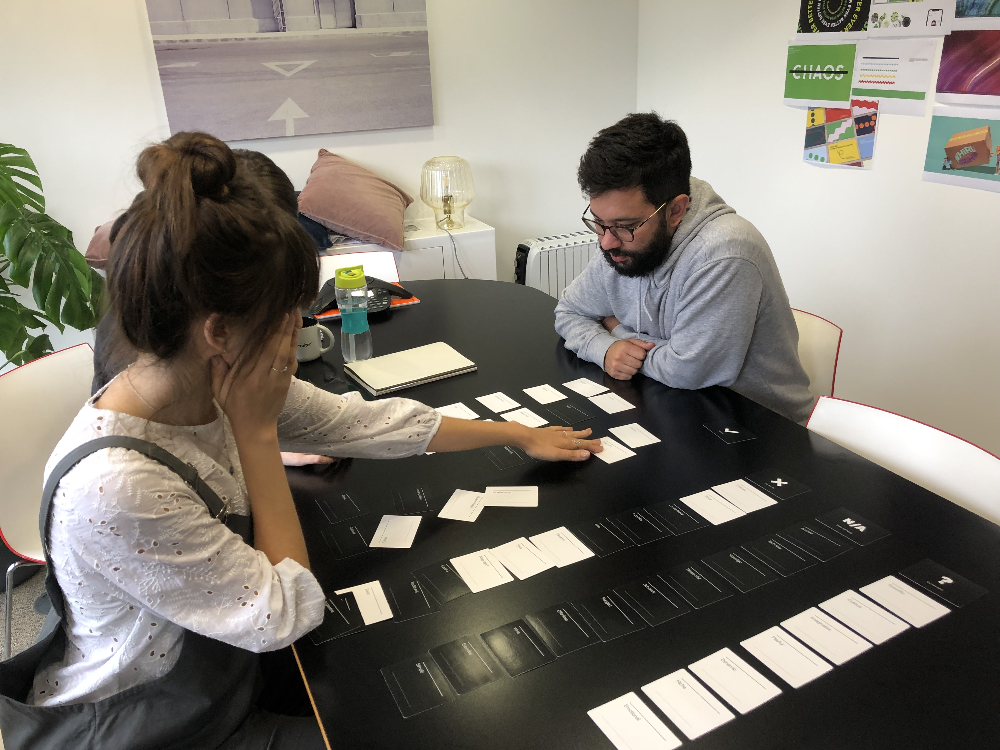
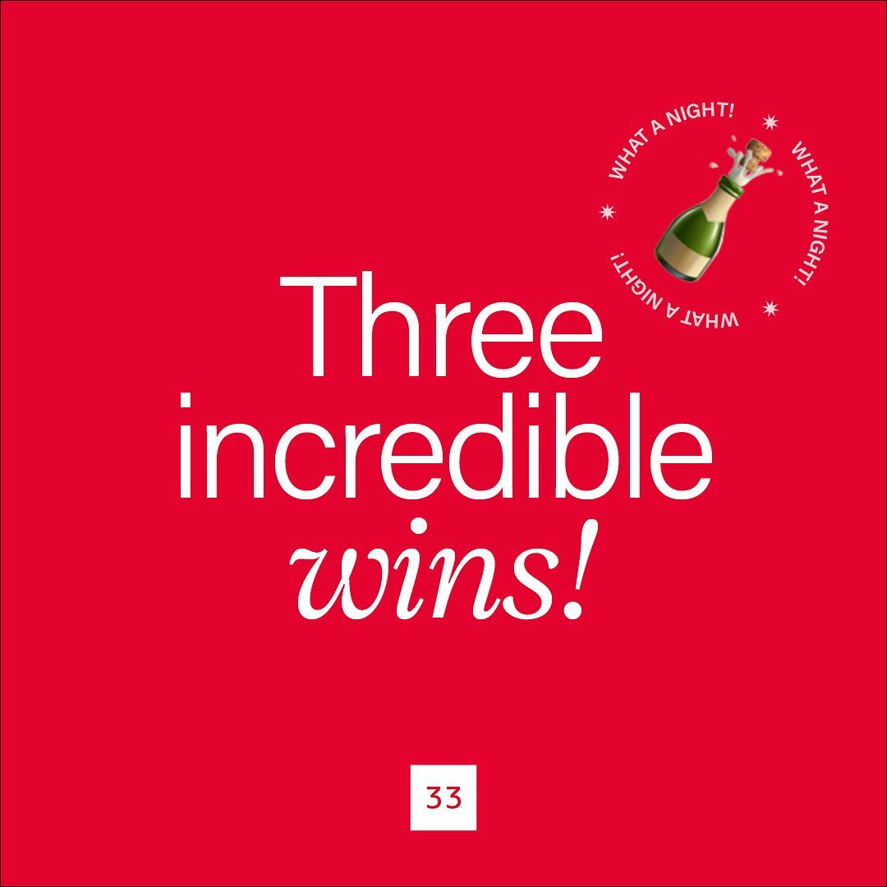

WEBSITE DESIGN – UX, UI
Rebrand & website redesign for ThirtyThree
The brief
ThirtyThree is a full-service agency with offices in London, New York and Bristol. They are quite a bold, high-energy, creative team, however their brand identity or website hadn't been updated in over 5 years and the image they were projecting had become obsolete.
As a designer at the agency, this wasn't my day-to-day challenge as we all know how complex can internal projects be... from getting all stakeholders involved at all stages to making everyone agree and move forward. And obviously keep within budget and time scales. Looking back, I'm pleased to realised we actually achieved it!
First things first, we went through a fairly bit of research – from looking at competitors and target audience, to internal stakeholders and team. We had to understand how had the agency changed and grown in this time, and what was now fitting in the market. We used a pack of Branding Decks which are actually quite fun to use to kickstart conversations and get everyone around the table involved.
As a designer at the agency, this wasn't my day-to-day challenge as we all know how complex can internal projects be... from getting all stakeholders involved at all stages to making everyone agree and move forward. And obviously keep within budget and time scales. Looking back, I'm pleased to realised we actually achieved it!
First things first, we went through a fairly bit of research – from looking at competitors and target audience, to internal stakeholders and team. We had to understand how had the agency changed and grown in this time, and what was now fitting in the market. We used a pack of Branding Decks which are actually quite fun to use to kickstart conversations and get everyone around the table involved.


A new look & feel
We went for a bold and scandi-style take on the current visual style we already had. A slightly more refined version. Largely type based, clean lines and geometric layout.
I worked with a pre-existing palette that had been defined originally with the brand, adapting it slightly to make the colours more punchy on screen and adding a secondary palette of pastel colours.
We were working during the pandemic, so we had to work around the challenge that we couldn't organise a joint photoshoot. We considered it all – from stock photography to selfies taken by the own employees, it just didn't fully communicated the energy of the agency. We decided to add emojis to the mix to make our brand human, cheeky and modern. After some experimenting, we settled on Acumin Pro as the new font and developed the style guide that later on would come to life in the website and social media.
We were working during the pandemic, so we had to work around the challenge that we couldn't organise a joint photoshoot. We considered it all – from stock photography to selfies taken by the own employees, it just didn't fully communicated the energy of the agency. We decided to add emojis to the mix to make our brand human, cheeky and modern. After some experimenting, we settled on Acumin Pro as the new font and developed the style guide that later on would come to life in the website and social media.




The website
Having gathered some insights, we created our user personas and flows to understand what their needs and pains were. With a refined bunch of content ideas and themes, we ran card sorting sessions with the team to help us figure out the information architecture for the new site. After about 6 iterations, we got to the sitemap you see below and started focusing on wireframes.
In all these years between the old and new website, the main thing that had happened and we regretted not having shouted out more about was one thing: we had produced amazing work. So we wanted our project pages to be the heart of the site, bringing them to life with great imagery and eye-catching animations.
In all these years between the old and new website, the main thing that had happened and we regretted not having shouted out more about was one thing: we had produced amazing work. So we wanted our project pages to be the heart of the site, bringing them to life with great imagery and eye-catching animations.


Development and launch
We wanted the new website to be easy to update in the future with new fresh content, so we built a set of reusable components that can be mixed and matched from the content management system (CMS).
We followed a mobile-first approach, so we used an 8pt grid system which with the amount of assets we needed to create, it ensured they scaled perfectly in all different screen displays – plus it provides a very flexible and consistent framework, yet allowed us to be playful enough. To make the handoff easier, I provided motion references in advance and prototyped specific flows. I worked closely with our development team to ensure the graphics and animations looked on point.
We followed a mobile-first approach, so we used an 8pt grid system which with the amount of assets we needed to create, it ensured they scaled perfectly in all different screen displays – plus it provides a very flexible and consistent framework, yet allowed us to be playful enough. To make the handoff easier, I provided motion references in advance and prototyped specific flows. I worked closely with our development team to ensure the graphics and animations looked on point.


Role Lead Digital Designer
Responsibilities Full rebrand & art direction, end-to-end website design (discovery, design and prototyping)
Launch date 2022
See it live thirtythr.ee/uk
Responsibilities Full rebrand & art direction, end-to-end website design (discovery, design and prototyping)
Launch date 2022
See it live thirtythr.ee/uk